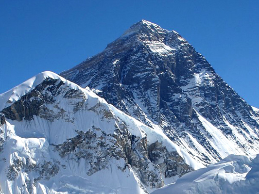

PEAKS ABOVE 8000m(death zone)
MOUNT EVEREST

HIGHEST MOUNTAIN
(TIBET-NEPAL)
ALTITUDE: 8,848.86 m (29,031.7 ft)
COORDINATES: 27°59′17″N 86°55′31″E[2]
DEATH RATE: 1%
ROUTES: 2
Mount Everest attracts many climbers, including highly experienced mountaineers. Ther
e are two main climbing routes, one approaching the summit from the southeast in
Nepal (known as the "standard route") and the other from the north in Tibet.
While not posing substantial technical climbing challenges on the standard route, Everest presents dangers such
as altitude sickness, weather, and wind, as well as signific ...know more
MOUNT
K2
SAVAGE MOUNTAIN
(POK-CHINA)
ALTITUDE: 8,610 m (28,250 ft)
COORDINATES: 35°52′57″N 76°30′48″E[2]
DEATH RATE: 29%
ROUTES:6
K2 also became popularly known as the Savage Mountain
after George Bell—a climber on the 1953 American expedition—told report
ers, "It's a savage mountain that tries to kill you."[7] Of the five highest mount
ains in the world, K2 is the deadliest; approximately one person die
s on the mountain for every four who reach the summit.[7][8] A
lso occasionally known as Chhogori, or Mount Godwin-Austen,[9] other ...know more
MOUNT Kangchenjunga
THIRD HIGHEST MOUNTAIN
(INDIA-NEPAL)
ALTITUDE: 8,586 m (28,169 ft)
COORDINATES: 27°42′09″N 88°08′48″E[2]
DEATH RATE: 20%
ROUTES: 4
Until 1852, Kangchenjunga was assumed to be the
highest mountain in the world, but calculations based on various r
eadings and measurements made by the Great Trigonometrical Survey of India in 1849
came to the conclusion that Mount Everest, known as Peak XV at the time, was the highest. Allowing
for further verification of all calculations, it was officially
announced in 1856 that Kangchenjunga is the...know more
MOUNT LHOTSE
SOUTH PEAK
(TIBET-NEPAL)
ALTITUDE: 8,516 m (27,940 ft)
COORDINATES: 27°57′42″N 86°56′00″E[1]
DEATH RATE: 2.8%
ROUTES: 1
Lhotse (Nepali: ल्होत्से L'hōtsē [lhot̪se]; Tibetan: ལྷོ་རྩེ, lho rtse)
is the fourth highest mountain in the world at 8,516 metres (27,940 ft), after Mount
Everest, K2, and Kangchenjunga. Part of the Everest massif, Lhotse is connected to the latter
peak via the South Col. Lhotse means "South Peak" in Tibetan. In addition to the main summit at 8,516 metres
...know more
MOUNT MAKALU
PYRAMID
(TIBET-NEPAL)
ALTITUDE: 8,463 m (27,766 ft)
COORDINATES: 27°53′23″N 87°05′20″E[1]
DEATH RATE: 9%
ROUTES: 2
Makalu has two notable subsidiary peaks. Kangchungtse,
or Makalu II (7,678 m) lies about three kilometres (two miles)
north-northwest of the main summit. Rising about
5 km (3 mi) north-northeast of the main summit across a
broad plateau, and connected to Kangchungtse by a narrow, 7,200 m saddle, is Chomo
Lonzo (7,804 m)...know more
MOUNT
CHO-OYU
Turquoise Goddess
(TIBET-NEPAL)
ALTITUDE: 8,188 m (26,864 ft)
COORDINATES: 28°05′39″N 86°39′39″E
DEATH RATE: 1.4%
ROUTES: 1
Cho Oyu (Nepali: चोयु; Tibetan: ཇོ་བོ་དབུ་ཡ; Chinese: 卓奥友峰) is the
sixth-highest mountain in the world at 8,188 metres (26,864 ft) above sea level. Cho Oyu means
"Turquoise Goddess" in Tibetan.[2] The mountain is the westernmost major peak
of the Khumbu sub-section of the Mahalangur Himalaya 20 km west of
Mount Everest. The mountain
...know more
MOUNT DHAULAGIRI
7th SUMMIT
(NEPAL)
ALTITUDE: 8,167 m (26,795 ft)
COORDINATES: 28°41′54″N 83°29′15″E]
DEATH RATE: 16.2%
ROUTES: 1
The Dhaulagiri massif in Nepal extends
120 km (70 mi) from the Kaligandaki River west to the Bheri.
This massif is bounded on the north and southwest by tributaries
of the Bheri River and on the southeast by the Myagdi Khola. Dhaulagiri is
the seventh highest mountain in the world at 8,167 metres (26,795 ft) above sea level, and
the highest mountain within the borders
of a single country (Nepal). It was first
climbed ...know more